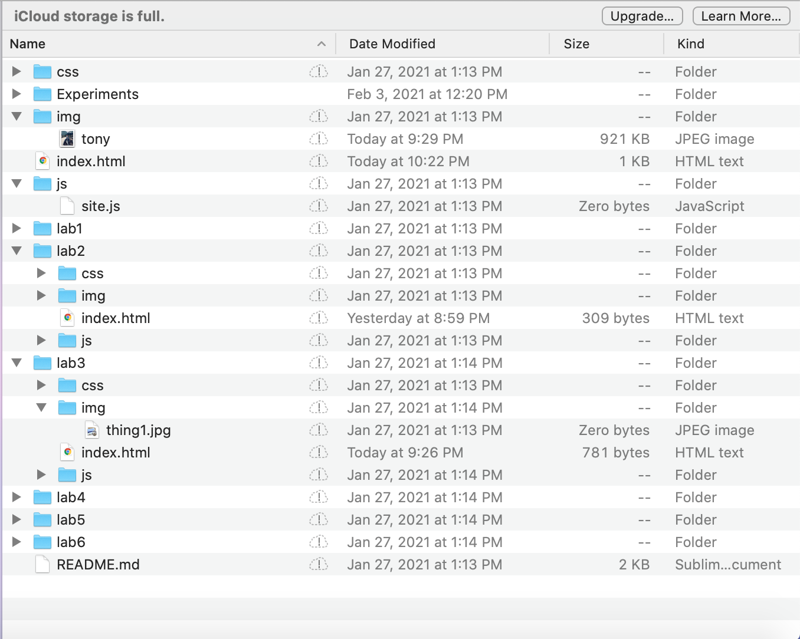

The main purpose of this lab is to create a file structure for labs two through six on my computer along with adding index.html files within the file structures.
The difficulties I had during this lab is navigating around the file structures. I took a while to not only adding the file structures, but the other files such as the index.html, images, and so on. Once I first added these files onto my computer, I got the hang of it and worked much faster.
Overall, I had a slow start to towards the lab but I would say I made a lot of progress.
